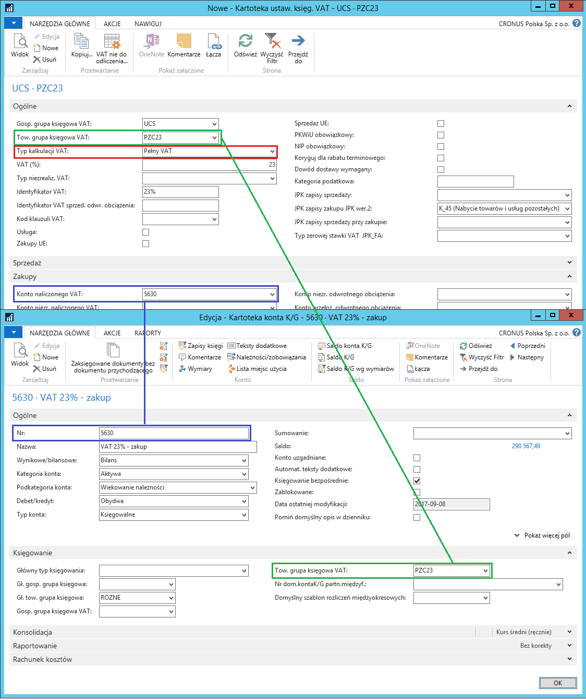
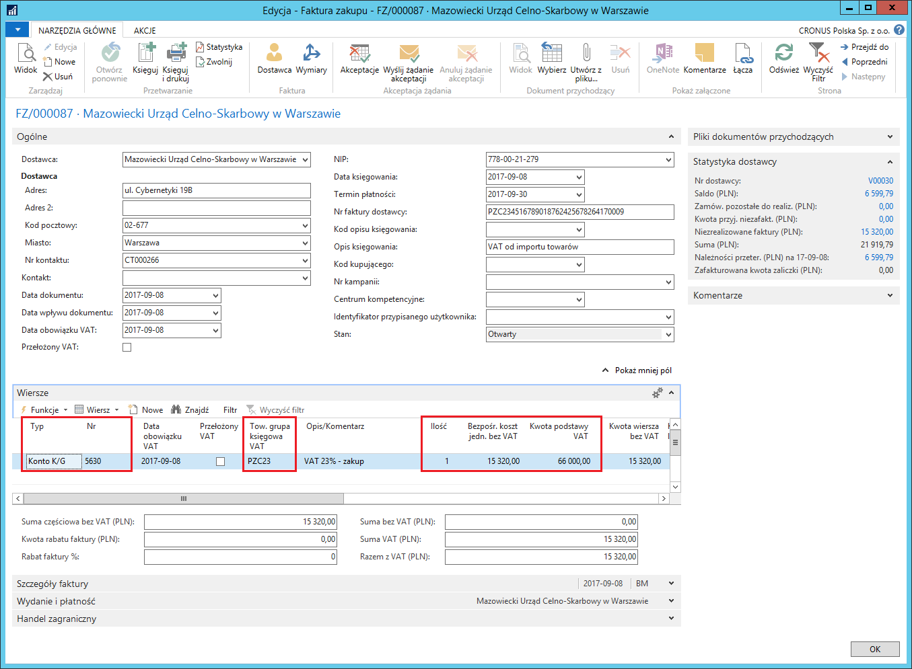
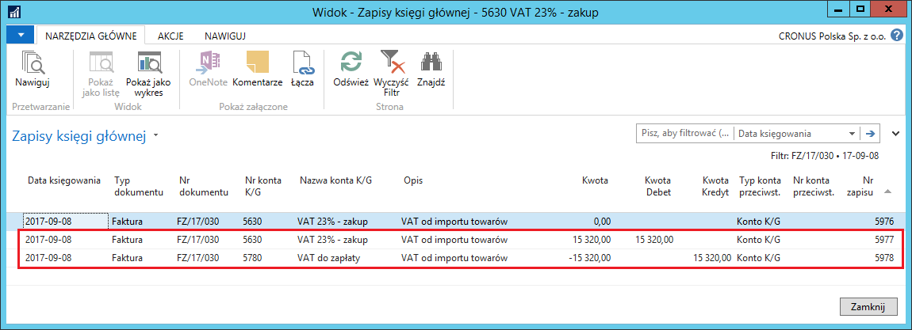
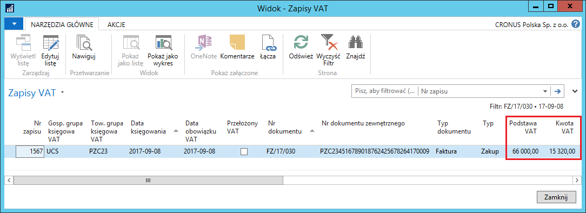
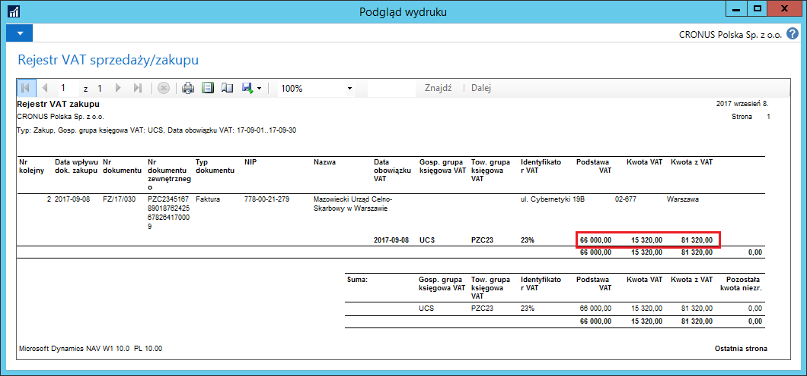

Księgowanie pełnego VAT
Informacje ogólne
Zgodnie z wymogami polskiego prawa, dla wszystkich transakcji w rejestrze VAT powinna być widoczna kwota netto. Aby spełnić ten wymóg, Polska Lokalizacja umożliwia ręczne wprowadzanie kwoty podstawy VAT dla księgowań obejmujących wyłącznie kwotę podatku VAT.
Ta funkcjonalność ma szczególne znaczenie dla ewidencji zakupów spoza UE. W takich transakcjach muszą być zaksięgowane 2 dokumenty:
Faktura zakupu, aby ująć wartość netto zakupów i zobowiązanie na podstawie faktury od dostawcy
Dokument PZC (Poświadczone Zgłoszenie Celne), aby ująć podatek VAT i inne dodatkowe koszty celne obciążające dostawę spoza terytorium UE.
Ponieważ wartość netto stanowiąca podstawę kalkulacji podatku VAT jest zaksięgowana na podstawie faktury zakupu, nie może być zaksięgowana ponownie na podstawie dokumentu PZC przy okazji księgowania podatku VAT. Dlatego podczas księgowania dokumentu PZC, podstawa kalkulacji podatku VAT podawana jest wyłącznie informacyjnie, co zapewnia poprawność wydruku transakcji zakupu w rejestrze VAT.
Ustawienia
Żeby księgowanie wyłącznie podatku VAT na podstawie dokumentu zakupu było możliwe, należy zdefiniować właściwe ustawienia. W tym celu należy postępować według następujących kroków:
Należy wybrać: Działy > Zarządzanie Finansami > Administracja > Ustawienia Księgowe VAT
W oknie Ustawienia Księgowe VAT, które się otworzy, należy zaznaczyć wiersz z właściwą kombinacją Gospodarczej grupy księgowej VAT (właściwej dla Urzędu Celno-Skarbowego lub Agencji Celnej – dostawcy PZC, wobec którego podmiot jest zobowiązany do uiszczenia zobowiązania z tytułu VAT i innych kosztów związanych z odprawą celną) oraz Towarowej grupy księgowej VAT (właściwej dla stawki podatku VAT w transakcji zakupu, zdefiniowanej specjalnie na potrzeby dokumentów PZC), a następnie wybrać akcję Edycja.
W oknie Kartoteka ustaw. Księg. VAT wybranej kombinacji grup VAT, które się otworzy, należy zwrócić uwagę na 2 pola:
W polu Typ kalkulacji VAT musi być wybrana opcja Pełny VAT
Konto KG wybrane w polu Konto naliczonego VAT musi mieć domyślnie przypisaną towarową grupę księgową VAT zgodną z tą, która użyta jest w definiowanych właśnie ustawieniach.

Obsługa
Dokument PZC wprowadzany jest analogicznie, jak zwykła faktura zakupu. W celu jego zaewidencjonowania należy postępować według następujących kroków:
Należy wybrać Działy > Zarządzanie Finansami > Zobowiązania > Faktury zakupu
Należy wybrać Nowe.
Z listy rozwijanej w polu Nr dostawcy (zakup) należy wybrać kartotekę urzędu celno-skarbowego.
Wiersz należy wypełnić w sposób następujący:
W polu Typ należy wybrać Konto K/G
W polu Nr należy wybrać konto KG, które zostało wybrane jako konto VAT-u naliczonego w ustawieniach księgowania VAT
W polu Ilość należy wprowadzić cyfrę 1
W polu Bezpośr. koszt jedn. bez VAT należy wprowadzić kwotę podatku VAT wykazaną na dokumencie PZC
W polu Kwota podstawy VAT należy wprowadzić kwotę stanowiąca podstawę do obliczenia podatku VAT, wykazaną na dokumencie PZC
Pozostałe wymagane pola należy uzupełnić w sposób standardowy.

- Dokument należy zaksięgować wybierając Księguj.
Zaksięgowanie dokumentu powoduje zarejestrowanie w księgach firmowych kwoty podatku VAT na wskazanym koncie VAT-u naliczonego oraz zobowiązania wobec urzędu celno-skarbowego w tej samej wysokości, na koncie zobowiązań zgodnym z ustawieniami grupy księgowej dostawcy przypisanej do dokumentu. Ręcznie wprowadzona kwota podstawy VAT kopiowana jest do zapisów VAT powiązanych z zaksięgowaną fakturą zakupu (dokumentem PZC) i drukowana w rejestrze VAT zakupu.


